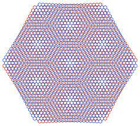

Tunable band structure
The electronic dispersion can be dramatically modified simply by changing the relative twist of two identical atomic layers.
Graphene • Moiré Physics • Flat Bands • Correlated Electrons
Twisted bilayer graphene is a remarkable example of how geometry alone can dramatically change the electronic properties of a material. Rotating one graphene layer relative to another creates a moiré superlattice that can reshape the electronic bands and produce strongly correlated states, including superconductivity.

My Connection to the Topic
I studied twisted bilayer graphene as the topic of my PhD general examination. What attracted me to the subject was the way it connects several major ideas in condensed matter physics: two-dimensional materials, band structure, quantum geometry, strong electronic correlations, and unconventional superconductivity.
Graphene
Carbon can form a remarkable variety of structures, including three-dimensional diamond and graphite, one-dimensional carbon nanotubes, and zero-dimensional fullerenes.
In 2004, isolated graphene sheets only one atom thick were experimentally obtained, establishing that stable two-dimensional atomic crystals could exist under ambient conditions.
Graphene consists of carbon atoms arranged in a two-dimensional honeycomb lattice. Near the charge-neutrality point, its low-energy electronic dispersion is approximately linear rather than parabolic.
The conduction and valence bands meet at the Dirac points, giving low-energy carriers properties that resemble massless Dirac fermions.
From One Layer to Two
Graphene layers interact through relatively weak van der Waals forces. This makes it possible to stack atomically thin sheets without requiring conventional chemical bonding between the layers.
Even when the two sheets are made from exactly the same material, their electronic properties depend strongly on how the lattices are aligned.
If one graphene sheet is rotated relative to the other, the two atomic lattices interfere geometrically and generate a much larger periodic structure known as a moiré pattern.
Instead of changing the chemical composition of the material, we can modify its electronic structure simply by changing the relative orientation of two atomic layers.
Moiré Superlattice
When two nearly identical periodic lattices are rotated relative to one another, a long-wavelength interference pattern appears.
In twisted bilayer graphene, this moiré pattern forms a new superlattice whose periodicity can be much larger than the underlying graphene lattice constant.
For small twist angles, the moiré wavelength grows rapidly as the angle decreases.
Here, \(a\) is the graphene lattice constant and \(θ\) is the twist angle.
This enlarged periodicity modifies how electronic states from the two layers hybridize and leads to a reconstructed moiré band structure.
Magic Angle
At particular small twist angles, interlayer coupling strongly renormalizes the electronic dispersion.
Near the first magic angle, approximately 1.1°, the low-energy moiré bands become very narrow compared with ordinary graphene.
A narrow or nearly flat band means that the kinetic-energy scale of the electrons is reduced.
Electron–electron interactions can therefore become much more important relative to the bandwidth, making the system an unusually tunable platform for correlated-electron physics.
Flat Bands
In a broad electronic band, kinetic energy encourages electrons to delocalize throughout the lattice.
When the bandwidth becomes small, that kinetic-energy advantage is reduced. Coulomb interactions between electrons can then become comparable to or larger than the kinetic-energy scale.
This makes interaction-driven electronic phases much easier to stabilize.
Correlated States
Experiments on magic-angle twisted bilayer graphene revealed insulating states at particular fillings of the moiré bands.
Their appearance near narrow bands immediately suggested that electron–electron interactions play a major role in the electronic behavior.
Subsequent experiments have revealed an even richer phase diagram, containing insulating states, superconductivity, magnetism, and other interaction-driven phenomena depending on filling, twist angle, strain, displacement field, and sample quality.
Superconductivity
One of the discoveries that made magic-angle graphene especially exciting was superconductivity appearing when the carrier density was tuned away from certain correlated insulating states.
Early measurements showed superconducting regions with dome-like shapes in the temperature–carrier-density phase diagram.
This immediately invited comparisons with other unconventional superconductors, particularly cuprates, where superconductivity also develops near strongly correlated electronic phases.
The analogy is scientifically intriguing, but it should not be taken to mean that twisted bilayer graphene and cuprates necessarily share the same microscopic pairing mechanism.
The superconducting mechanism in twisted graphene systems remains an active research question. Electronic correlations clearly play an important role in the broader phase diagram, but the relative roles of electronic and phonon-mediated interactions are still debated.
Connection to Cuprates
Cuprates are strongly correlated materials in which superconductivity emerges from a complex phase diagram containing insulating, magnetic, and unusual metallic states.
Their superconducting transition temperature also forms a dome as the carrier concentration changes.
Twisted bilayer graphene offers another system where superconductivity appears close to interaction-driven insulating states and can be tuned continuously using electrostatic gates.
Unlike cuprates, however, TBG allows important parameters such as carrier density and twist geometry to be engineered with unusual precision.
Fabrication
The extraordinary electronic behavior of TBG depends sensitively on the relative rotation between the two graphene layers.
This makes sample fabrication part of the physics problem itself. Small twist-angle variations, strain, contamination, bubbles, and disorder can significantly modify the electronic structure of the moiré device.
One widely used fabrication strategy is the tear-and-stack technique.
Tear-and-Stack
A transfer polymer or stamp contacts part of a graphene flake and lifts that region while leaving the remaining portion on the substrate.
The substrate or transfer stage is rotated by the desired angle. Because both pieces originated from the same graphene crystal, their initial crystallographic orientation is known relative to one another.
The lifted graphene portion is placed back onto the remaining section, producing a bilayer with a controlled relative twist.
Why It Matters
The electronic dispersion can be dramatically modified simply by changing the relative twist of two identical atomic layers.
Narrow moiré bands enhance the relative importance of electron–electron interactions.
Carrier density can be varied continuously using electrostatic gates, allowing multiple electronic phases to be explored in the same device.
Twist angle introduces a fundamentally different way of engineering quantum materials without changing their chemical composition.
What I Found Interesting
From my PhD general examination
I came to twisted bilayer graphene from a background in superconductivity and strongly correlated cuprates.
The comparison was especially interesting to me because both systems raise similar broad questions about how superconductivity emerges near strongly correlated electronic states, while their material structures and experimental control are very different.
TBG also illustrates something I find particularly interesting in experimental condensed matter physics: fabrication parameters such as geometry, alignment, strain, and interface quality can directly determine the quantum state that becomes experimentally accessible.
Moiré Quantum Materials
Twisted bilayer graphene demonstrates that stacking two familiar materials in a carefully controlled geometry can generate an electronic system with properties that neither layer possesses on its own. That idea has helped establish moiré materials as a powerful platform for engineering and studying correlated quantum states.